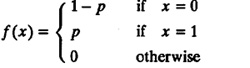
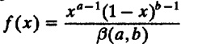
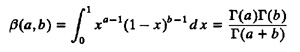
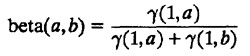
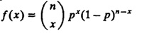

CHAPTER 29
COMMONLY USED DISTRIBUTIONS
Question: Why did you use the Gaussian assumption?
Answer. Because it’s the normal assumption!
—Overheard at a conference.
—S. Pasupathy (1989)
This chapter describes the random-number generation algorithms for distributions commonly used by computer systems performance analysts. This chapter is organized in a manner convenient for future reference. The distributions are listed in an alphabetic order. For each distribution, the key characteristics are summarized, algorithms for random-number generation are presented, and examples of their applications are given.
29.1 BERNOULLI DISTRIBUTION
The Bernoulli distribution is the simplest discrete distribution. A Bernoulli variate can take only two values, which are usually denoted as failure and success or x = 0 and x = 1, respectively. If p denotes the probability of success, 1 – p is the probability of failure. The experiments to generate a Bernoulli variate are called Bernoulli trials.
The key characteristics of the Bernoulli distribution are summarized in Table 29.1. The Bernoulli distribution is used to model the probability of an outcome having a desired class or characteristic, for example,
TABLE 29.1 Bernoulli Distribution Bernoulli(p)
- 1. Parameters: p = probability of success (x = 1), 0 1 ≤ p ≤ 1
- 2. Range: x = 0, 1
- 3. pmf: 
- 4. Mean: p
- 5. Variance: p(1 – p)
- 1. a computer system is up or down,
- 2. a packet in a computer network reaches or does not reach the destination, or
- 3. a bit in the packet is affected by noise and arrives in error.
The Bernoulli distribution and its derivative distributions can be used only if the trials are independent and identical so that the probability of success in each trial is p and is not affected by the outcomes of the past trials.
Using inverse transformation, Bernoulli variates can be generated as follows. Generate u~U(0, 1). If u≤p, return 0. Otherwise, return 1.
29.2 BETA DISTRIBUTION
The beta distribution is used to represent random variates that are bounded, for instance, between 0 and 1. The key characteristics of the beta distribution are summarized in Table 29.2.
TABLE 29.2 Beta Distribution beta(a,b)
- 1. Parameters: a,b = shape parameters, a > 0, b > 0
- 2. Range: 0 ≤ x ≤ 1
- 3. pdf: 
α(·) is the beta function and is related to the gamma function as follows:
-

- 4. Mean: a/(a + b)
- 5. Variance: ab/[(a + b)2(a + b + 1)]
The range of the beta variate as defined in Table 29.2 is [0, 1], that is, 0 ≤ x ≤ 1. It can also be defined for any other range [xmin, xmax] by substituting (x – xmin) / (xmax – xmin) in place of x in the pdf specified.
The beta distribution is used to model random proportions, for example,
- 1. the fraction of packets requiring retransmissions or
- 2. the fraction of remote procedure calls (RPCs) taking more than a specified time.
Beta variates can be generated as follows:
- 1. Generate two gamma variates γ(1,a) and γ(1,b), and take the ratio:
-

- 2. If both parameters a and b are integers, the following algorithm by Fox (1963) can be used:
- (a) Generate a + b + 1 uniform U(0,1) random numbers.
- (b) Return the ath smallest number as beta(a,b).
- 3. If both a and b are less than 1, the following method by Jöhnk (1964) may be used:
- (a) Generate two uniform U(0, 1) random numbers u1 and u2
- (b) Let x = u11/b and y = u21/b. If x + y > 1, go back to the previous step. Otherwise, return x/(x + y) as beta(a,b).
- 4. If both a and b are greater than 1, an algorithm based on rejection techniques can be easily developed to generate beta variates.
29.3 BINOMIAL DISTRIBUTION
The number of successes x in a sequence of n Bernoulli trials has a binomial distribution. The key characteristics of the binomial distribution are summarized in Table 29.3.
TABLE 29.3 Binomial Distribution binomial(p,n)
- 1. Parameters: p = probability of success in a trial, 0 < p < 1
- n = number of trials; n must be a positive integer
- 2. Range: x = 0,1,...,n
- 3. pdf: 
- 4. Mean: n p
- 5. Variance: n p(1 – p)
The binomial distribution is used to model the number of successes in a sequence of n independent and identical Bernoulli trials, for example,
- 1. the number of processors that are up in a multiprocessor system,
- 2. the number of packets that reach the destination without loss,
- 3. the number of bits in a packet that are not affected by noise, or
- 4. the number of items in a batch that have certain characteristics.
The variance of the binomial distribution is always less than the mean. For all the preceding applications, negative binomial or Poisson distributions can be used in place of a binomial distribution if the variance is greater than the mean or equal to the mean, respectively.
Binomial variates can be generated as follows:
- 1. Generate n U(0,1) random numbers. The number of random numbers that are less than p is binomial(p, n). This is the composition method based on the observation that the sum of n Bernoulli variates has a binomial distribution.
- 2. For small p, a faster technique is as follows:
- (a) Generate geometric random numbers Gi(p) = [ln(ui)/ln(1 – p)].
- (b) If the sum of geometric random numbers so far is less than or equal to n, go back to the previous step. Otherwise, return the number of random numbers generated minus 1. If
 , return m – 1.
, return m – 1.
- 3. Inverse transformation method: Compute the CDF F(x) for x = 0, 1, 2,..., n and store in an array. For each binomial variate, generate a U(0, 1) variate u and search the array to find x so that F(x) ≤ u < F(x + 1); return x.